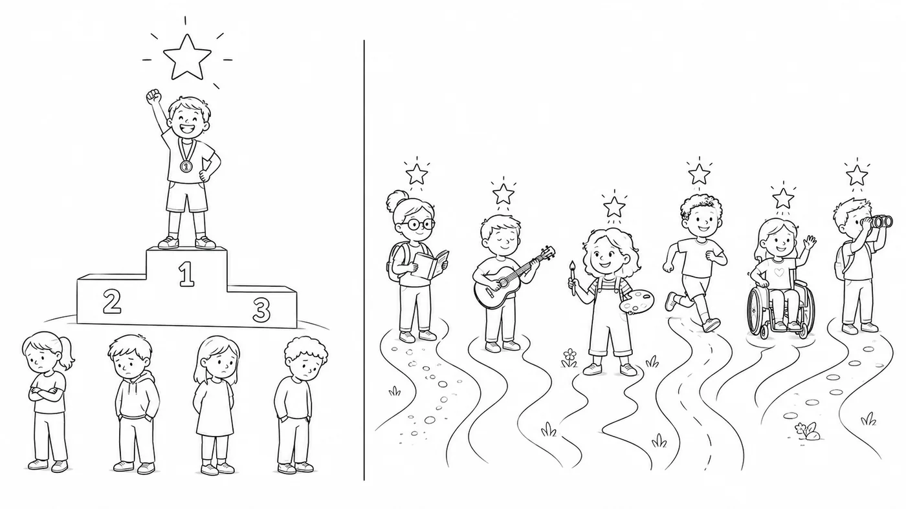

Mobile Ansicht – alle Folien untereinander zum Lesen. Für die Ansicht als Folienpräsentation im Browser „Desktopversion“ wählen oder hier tippen.
SRL
SRL ist keine Methode!
Was selbstreguliertes Lernen (nicht) ist.
Christoph Wegemann
Online-Fortbildung · in fünf Kapiteln
Überblick
Was dich erwartet.
1Was SRL ist – und was nichtca. 8 min
2Warum es sich lohntca. 4 min
3Das Modellca. 7 min
4Was wir erprobenca. 6 min
5Wie es weitergehtca. 5 min
Bilder ohne Quellenangabe sind KI-generiert.
1
Kapitel 1 von 5
Was SRL ist – und was nicht.
Leitfrage
Wie befähigen wir Lernende, ihr Lernen selbst zu steuern?
Selbstreguliertes Lernen · Arbeitsdefinition
Lernende planen ihr Lernen, beobachten es beim Arbeiten und werten es aus – und steuern dabei auch ihre Motivation.
Mythos 1
„SRL ist Freiarbeit.“
Freiheit ohne Strategie = Selbstbeschäftigung.
Mythos 2
„Die Lehrkraft zieht sich zurück.“
Andere Rolle: Gerüst, Feedback, Begleitung.

Mythos 3
„Das können nur starke Lernende.“
Gerade Schwächere profitieren – wenn SRL gelehrt wird.
Mythos 4
„Immer Projektarbeit und offene Methoden.“
Jede Unterrichtsform kann SRL fördern.
Mythos 5
„SRL ist ein Persönlichkeitsmerkmal.“
SRL ist erlernbar.
Kurz anhalten
Welcher dieser Mythen ist dir schon begegnet – bei anderen oder bei dir selbst?
Video pausieren, kurz nachdenken oder notieren – dann weiter.
Wo steht SRL?
selbstständig
Brauche ich jemanden neben mir?
selbstorganisiert
Wie ordne ich meine Arbeit?
selbstverantwortlich
Wofür stehe ich ein?
selbstreguliert
Wie steuere ich mein Lernen?
Selbstständig ≠ selbstreguliert.
2
Kapitel 2 von 5
Warum es sich lohnt.
Warum sich das lohnt
d ≈ 0,6
Effektstärke von SRL und Metakognition – deutlich über dem Durchschnitt.
Durchschnitt aller Maßnahmen 0,40 (Hattie)
SRL & Metakognition 0,52–0,61 (Hattie, EEF)
00,2klein0,40,5mittel0,60,8groß1,0
Zum Vergleich: Die EEF übersetzt d = 0,53–0,61 als „+7 Monate“ zusätzlichen Lernfortschritt im Schuljahr – gegenüber ähnlichen Lernenden ohne diese Förderung.
Hattie, Visible Learning (Stand 2017): metakognitive Strategien 0,60, Selbstregulationsstrategien 0,52, Durchschnitt 0,40 · visible-learning.org · EEF Teaching and Learning Toolkit 2025, 246 Studien · educationendowmentfoundation.org.uk · Einordnung klein/mittel/groß nach Cohen
Was laut EEF wirkt
Was wirkt?
Strategien explizit unterrichten
Eigenes Denken vormachen
Anspruchsvolle Aufgaben im Fachunterricht
Fortbildung für ein gemeinsames Bild
Education Endowment Foundation (EEF), Teaching and Learning Toolkit: „Metacognition and self-regulation“ · educationendowmentfoundation.org.uk